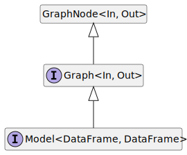

Interface Graph<In, Out>
Type Parameters
Hierarchy-Diagram
{kind=link}
Legend
 interface
interface
Hierarchy
- GraphNode<In, Out>
- Graph
Index
Properties
Methods
Properties
edges
internal
internal
nodes
Methods
add
- add
Edge(edge): void -
Parameters
-
edge: Edge<any>
Returns void
-
add
add
delete
- delete
Edge(edge): void -
Parameters
-
edge: Edge<any>
Returns void
-
delete
event
- event
Names(): (string | symbol)[] -
Returns an array listing the events for which the emitter has registered listeners. The values in the array are strings or
Symbols.import { EventEmitter } from 'node:events';
const myEE = new EventEmitter();
myEE.on('foo', () => {});
myEE.on('bar', () => {});
const sym = Symbol('symbol');
myEE.on(sym, () => {});
console.log(myEE.eventNames());
// Prints: [ 'foo', 'bar', Symbol(symbol) ]Returns (string | symbol)[]
Since
v6.0.0
find
find
find
get
listener
- listener
Count(eventName, listener?): number -
Returns the number of listeners listening for the event named
eventName. Iflisteneris provided, it will return how many times the listener is found in the list of the listeners of the event.Parameters
-
eventName: string | symbol
The name of the event being listened for
-
Optionallistener: FunctionThe event handler function
Returns number
Since
v3.2.0
-
listeners
- listeners(eventName): Function[]
-
Returns a copy of the array of listeners for the event named
eventName.server.on('connection', (stream) => {
console.log('someone connected!');
});
console.log(util.inspect(server.listeners('connection')));
// Prints: [ [Function] ]Parameters
-
eventName: string | symbol
Returns Function[]
Since
v0.1.26
-
off
prepend
- prepend
Listener(eventName, listener): Graph<In, Out> -
Adds the
listenerfunction to the beginning of the listeners array for the event namedeventName. No checks are made to see if thelistenerhas already been added. Multiple calls passing the same combination ofeventNameandlistenerwill result in thelistenerbeing added, and called, multiple times.server.prependListener('connection', (stream) => {
console.log('someone connected!');
});Returns a reference to the
EventEmitter, so that calls can be chained.Parameters
-
eventName: string | symbol
The name of the event.
-
listener: ((...args) => void)
The callback function
-
- (...args): void
-
Parameters
-
Rest...args: any[]
Returns void
-
-
Returns Graph<In, Out>
Since
v6.0.0
-
prepend
- prepend
Once Listener(eventName, listener): Graph<In, Out> -
Adds a one-time
listenerfunction for the event namedeventNameto the beginning of the listeners array. The next timeeventNameis triggered, this listener is removed, and then invoked.server.prependOnceListener('connection', (stream) => {
console.log('Ah, we have our first user!');
});Returns a reference to the
EventEmitter, so that calls can be chained.Parameters
-
eventName: string | symbol
The name of the event.
-
listener: ((...args) => void)
The callback function
-
- (...args): void
-
Parameters
-
Rest...args: any[]
Returns void
-
-
Returns Graph<In, Out>
Since
v6.0.0
-
raw
- raw
Listeners(eventName): Function[] -
Returns a copy of the array of listeners for the event named
eventName, including any wrappers (such as those created by.once()).import { EventEmitter } from 'node:events';
const emitter = new EventEmitter();
emitter.once('log', () => console.log('log once'));
// Returns a new Array with a function `onceWrapper` which has a property
// `listener` which contains the original listener bound above
const listeners = emitter.rawListeners('log');
const logFnWrapper = listeners[0];
// Logs "log once" to the console and does not unbind the `once` event
logFnWrapper.listener();
// Logs "log once" to the console and removes the listener
logFnWrapper();
emitter.on('log', () => console.log('log persistently'));
// Will return a new Array with a single function bound by `.on()` above
const newListeners = emitter.rawListeners('log');
// Logs "log persistently" twice
newListeners[0]();
emitter.emit('log');Parameters
-
eventName: string | symbol
Returns Function[]
Since
v9.4.0
-
remove
- remove
All Listeners(event?): Graph<In, Out> -
Removes all listeners, or those of the specified
eventName.It is bad practice to remove listeners added elsewhere in the code, particularly when the
EventEmitterinstance was created by some other component or module (e.g. sockets or file streams).Returns a reference to the
EventEmitter, so that calls can be chained.Parameters
-
Optionalevent: string | symbol
Returns Graph<In, Out>
Since
v0.1.26
-
remove
- remove
Listener(eventName, listener): Graph<In, Out> -
Removes the specified
listenerfrom the listener array for the event namedeventName.const callback = (stream) => {
console.log('someone connected!');
};
server.on('connection', callback);
// ...
server.removeListener('connection', callback);removeListener()will remove, at most, one instance of a listener from the listener array. If any single listener has been added multiple times to the listener array for the specifiedeventName, thenremoveListener()must be called multiple times to remove each instance.Once an event is emitted, all listeners attached to it at the time of emitting are called in order. This implies that any
removeListener()orremoveAllListeners()calls after emitting and before the last listener finishes execution will not remove them fromemit()in progress. Subsequent events behave as expected.import { EventEmitter } from 'node:events';
class MyEmitter extends EventEmitter {}
const myEmitter = new MyEmitter();
const callbackA = () => {
console.log('A');
myEmitter.removeListener('event', callbackB);
};
const callbackB = () => {
console.log('B');
};
myEmitter.on('event', callbackA);
myEmitter.on('event', callbackB);
// callbackA removes listener callbackB but it will still be called.
// Internal listener array at time of emit [callbackA, callbackB]
myEmitter.emit('event');
// Prints:
// A
// B
// callbackB is now removed.
// Internal listener array [callbackA]
myEmitter.emit('event');
// Prints:
// ABecause listeners are managed using an internal array, calling this will change the position indices of any listener registered after the listener being removed. This will not impact the order in which listeners are called, but it means that any copies of the listener array as returned by the
emitter.listeners()method will need to be recreated.When a single function has been added as a handler multiple times for a single event (as in the example below),
removeListener()will remove the most recently added instance. In the example theonce('ping')listener is removed:import { EventEmitter } from 'node:events';
const ee = new EventEmitter();
function pong() {
console.log('pong');
}
ee.on('ping', pong);
ee.once('ping', pong);
ee.removeListener('ping', pong);
ee.emit('ping');
ee.emit('ping');Returns a reference to the
EventEmitter, so that calls can be chained.Parameters
-
eventName: string | symbol
-
listener: ((...args) => void)
-
- (...args): void
-
Parameters
-
Rest...args: any[]
Returns void
-
-
Returns Graph<In, Out>
Since
v0.1.26
-
set
- set
Max Listeners(n): Graph<In, Out> -
By default
EventEmitters will print a warning if more than10listeners are added for a particular event. This is a useful default that helps finding memory leaks. Theemitter.setMaxListeners()method allows the limit to be modified for this specificEventEmitterinstance. The value can be set toInfinity(or0) to indicate an unlimited number of listeners.Returns a reference to the
EventEmitter, so that calls can be chained.Parameters
-
n: number
Returns Graph<In, Out>
Since
v0.3.5
-
Alias for
emitter.on(eventName, listener).